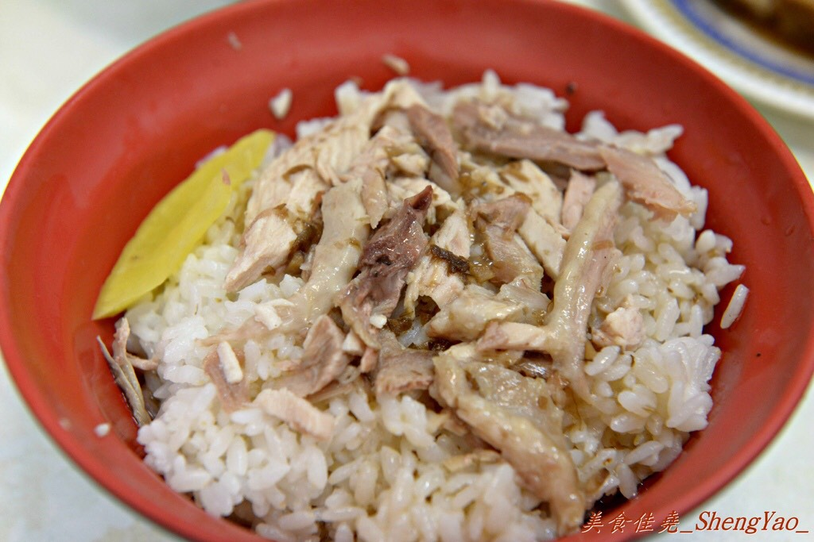

火雞肉飯
豬腳飯
控肉飯
滷肉飯

火雞肉飯，台灣嘉義地區知名小吃之一。傳統的料理法為在白飯上鋪上火雞肉，
再淋上雞汁跟豬油而成，但不同的店家做法會略有不同
。雖然隨著文化擴散，台灣各縣市都可以看到販售
火雞肉飯的餐飲店，但大多會打出「嘉義」的名號。
傳統的嘉義火雞肉飯主要選用火雞肉當作素材，而雞汁則是以全雞蒸煮所熬成醬汁，淋上酥炸過紅蔥頭的豬油
，
混合雞肉和白飯攪拌，味道香而不膩；傳統店家會在火雞肉上頭再撒些油蔥酥，讓整體的香味更富有層次，
一般則是
會配一片醃製的黃色蘿蔔乾，相當下飯。
根據地方耆老說法，二戰結束之後許多駐台美軍（主要為空軍）駐紮於嘉義地區，美軍將火雞帶入之後，
由嘉義附近地區養殖戶大量繁殖。因戰後各項物資缺乏，一般人要吃雞肉不容易，火雞較大，相對於土雞價格也低
，營養價值也高，
地方小吃攤想到用火雞當作小吃食材，因此做出類似滷肉飯之雞肉飯料理。
傳統南台灣多拿雞胸肉蒸熟剝成雞絲或雞片鋪在飯上
、澆上醬汁稱作雞絲飯或雞片飯，而北臺灣多採用家雞做成
「雞肉飯」，且以雞絲飯為多，但不如嘉義雞肉飯有名。